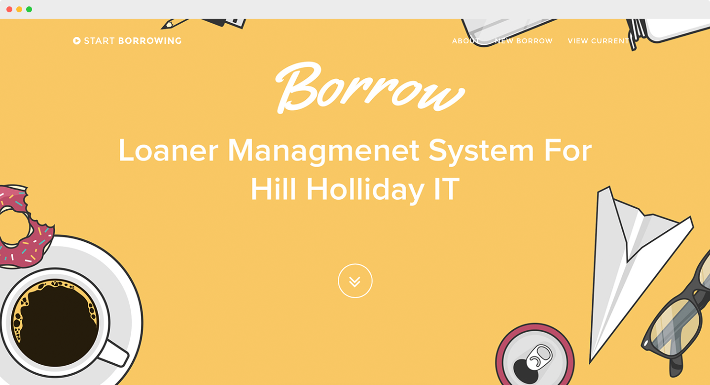
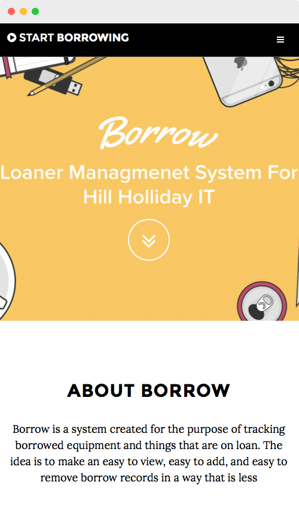
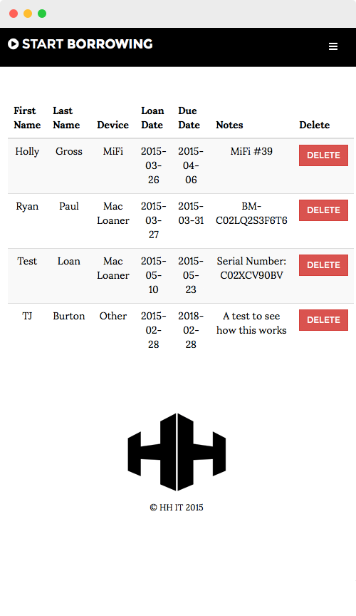

Borrow
Borrow is a system that was created for the purpose of tracking borrowed equipment and items that are on loan. The idea is to make an easy to view, easy to add, and easy ro remove borrow records in a way that is less cluttered/confusing than a ticketing system.
Borrow was built with HTML5, CSS3, PHP, MySQL, JavaScript, and Bootstrap.
Desktop


Mobile


Notes:
The back-end of Borrow is currently being redone so this website is now a WIP. Please take this into consideration when using/evaluating Borrow until v.2 is released.